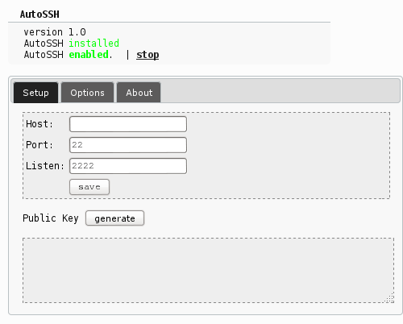
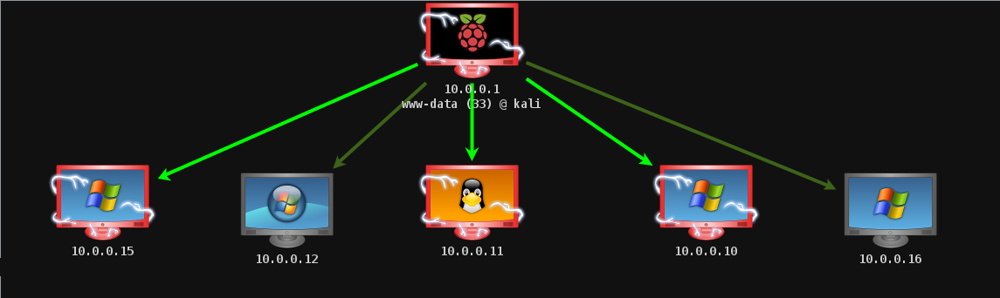
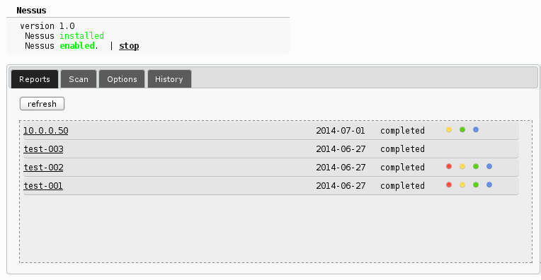
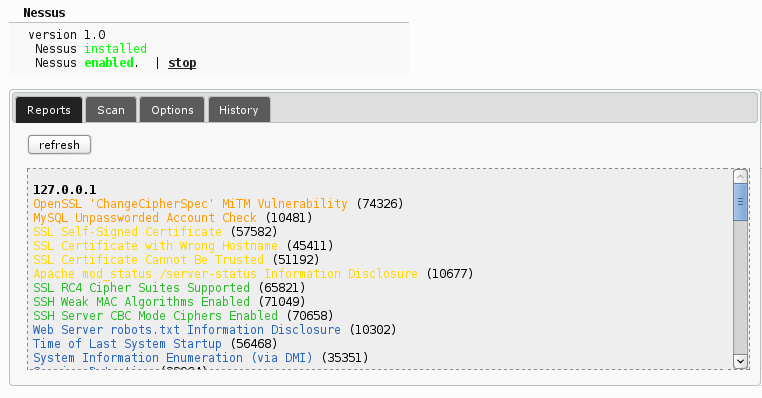
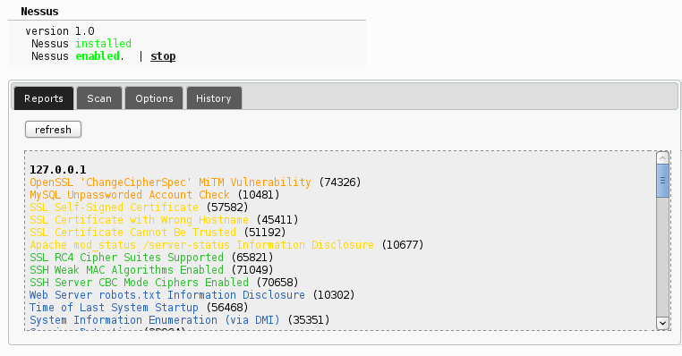
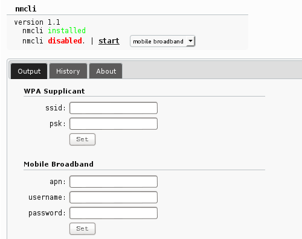
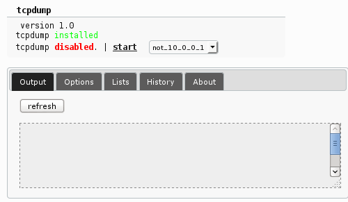
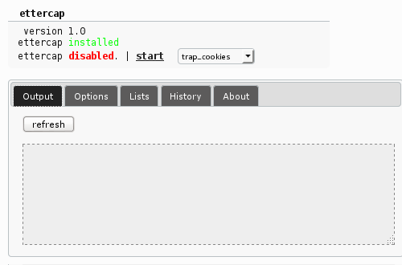

Overview
FruityWifi is an open source tool to audit wireless networks.
It allows the user to deploy advanced attacks by directly using the web interface or by sending messages to it.
Initialy the application was created to be used with the Raspberry-Pi, but it can be installed on any Debian based system.
FruityWifi v2.0 has many upgrades. A new interface, new modules, Realtek chipsets support, Mobile Broadband (3G/4G) support, a new control panel, and more.
Initialy the application was created to be used with the Raspberry-Pi, but it can be installed on any Debian based system.
FruityWifi v2.0 has many upgrades. A new interface, new modules, Realtek chipsets support, Mobile Broadband (3G/4G) support, a new control panel, and more.


A more flexible control panel. Now it is possible to use FruityWifi combining multiple networks and setups:
- Ethernet Ethernet,
- Ethernet 3G/4G,
- Ethernet Wifi,
- Wifi Wifi,
- Wifi 3G/4G, etc.
Within the new options on the control panel we can change the AP mode between Hostapd or Airmon-ng allowing to use more chipsets like Realtek.
It is possible customize each one of the network interfaces which allows the user to keep the current setup or change it completely.
- Ethernet Ethernet,
- Ethernet 3G/4G,
- Ethernet Wifi,
- Wifi Wifi,
- Wifi 3G/4G, etc.
Within the new options on the control panel we can change the AP mode between Hostapd or Airmon-ng allowing to use more chipsets like Realtek.
It is possible customize each one of the network interfaces which allows the user to keep the current setup or change it completely.
New Modules
FruityWifi is based on modules making it more flexible.
These modules can be installed from the control panel to provide FruityWifi with new functionalities.
Within the available modules you can find URLsnarf, DNSspoof, Kismet, mdk3, ngrep, nmap, Squid3 y SSLstrip (code injection functionality), Captive Portal, AutoSSH, Meterpreter, Tcpdump and more.
Within the available modules you can find URLsnarf, DNSspoof, Kismet, mdk3, ngrep, nmap, Squid3 y SSLstrip (code injection functionality), Captive Portal, AutoSSH, Meterpreter, Tcpdump and more.

AutoSSH
allows the user to create a reverse ssh connection, restarting it in case that the connection has been closed or dropped.
It is useful to keep a permanent connection with FruityWifi.


Meterpreter
is an outstanding tool to gather information from a compromised host, manipulate system processes and/or kill them, and more.
This module allows FruityWifi to compromise more hosts and use them to access more devices and networks.



Nessus
is a vulnerability scanner. With this module it is possible to scan hosts from FruityWifi without using the Nessus interface.
We can discover the vulnerabilities present on each of the hosts to understand the attack surface and compromise them.

Among the new features FruityWifi now supports Mobile Broadband (3G/4G).
We can use this module to connect a 3G/4G dongle and give internet access to FruityWifi without the need of Wifi or Ethernet.

The main function of Tcpdump is to analyze network traffic.
With this module we can intercept the traffic passing through the device, filter it and/or store it for post analysis.

Ettercap
is a tool able to capture network traffic and perform different attacks.
With this module we can perform MITM attacks using ARP poisoning.
Videos
FruityWifi Modules Sample (v1.7)
FruityWifi + Raspberry Pi + adafruit 16x2 lcd + keypad